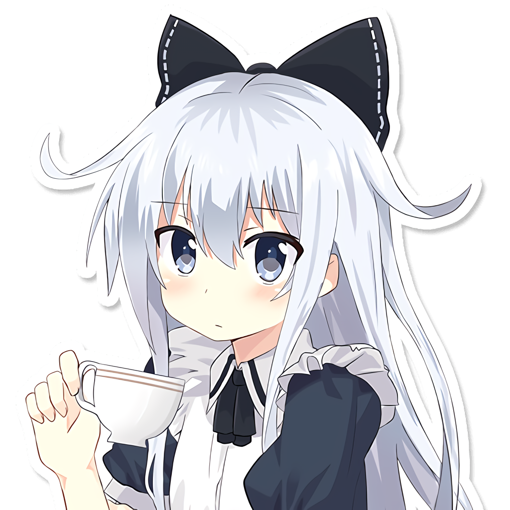

Yukino Yukinoshita is the female protagonist of Yahari Ore no Seishun Love Come wa Machigatteiru.
Yukino is quite popular even for her cold personality. Because of her look and skills in various fields, even Hachiman, who doesn't talk to anyone and doesn't even know his own classmate (Yui Yuigahama), recognized Yukino at the very instant he met her in the club room.
Yukino is smart and beautiful who comes from a wealthy family, but she has a tendency to be blunt and often points out faults in other people without sugarcoating them, which can be seen when she was criticizing Zaimokuza's novel. Yukino believes that it is the duty of the "exceptional" (a.k.a. herself) to help the less fortunate, which Hachiman Hikigaya refers to as her twisted nobility. She also has a very cold and unfriendly demeanor for which Hachiman nicknames her the "Ice Queen".
Her personality can be seen as exceedingly haughty to some people, including Hachiman. Despite this she is still capable of understanding other people and being kind and compassionate in her own way. According to Hachiman she is peerless in skills and personality.
On a more personal level, she hates to be pointed out to have a smaller chest than other female characters. She always tries to maintain an elegant and dignified appearance, which is strongly evident when she covered her laughter after Hachiman had presented his cultural festival slogan containing heavy criticism of the committee members for slacking off on their duties.
She is a competitive person, willing to win any competition officially and unofficially to prove herself and refuses to lose. There is a number of examples for this in the series, such as when she accepted Shizuka Hiratsuka's challenge when asked if she was afraid of losing. Her main driving force is her wish to surpass her sister, going as far as doing what her sister had done in order to show that she could do it just as well.
Despite all this, she sometimes shows her girly side and clumsiness as well later in the series, mostly to Hachiman when they are alone. She seems to be a fan of Pan-san, a panda character. She even has the real manuscript of the story and its stuffed toy, which Hachiman finds surprising.
She also showed her cold face when Yumiko expressed her idea of Pan-san not being cute. She also asked her friends to be quiet in time of Pan-san bamboo fight. Her obsession for Pan-san is known by both Yui Yuigahama and Hachiman. Yukino is almost always attracted to spots were Pan-san is displayed. Despite her efforts to hide her love for Pan-san, she occasionally slips up and show the fan side of her.
Yukino is also fond of cats and anything cat-related. This is shown throughout the anime series and was focused greatly in the Light novels. She even meowed with Hachiman's cat, Kamakura, causing him to ask her about it in a tone that suggested that he was dubious of her sanity. In Drama CD, it was mentioned by Haruno Yukinoshita that Yukino has a hobby of hugging her Pan-san doll and watches cat video on her computer. Another instance was during a visit at the aquarium, where she was deeply intrigued by the catsharks due to the word "cat" being in their name.
